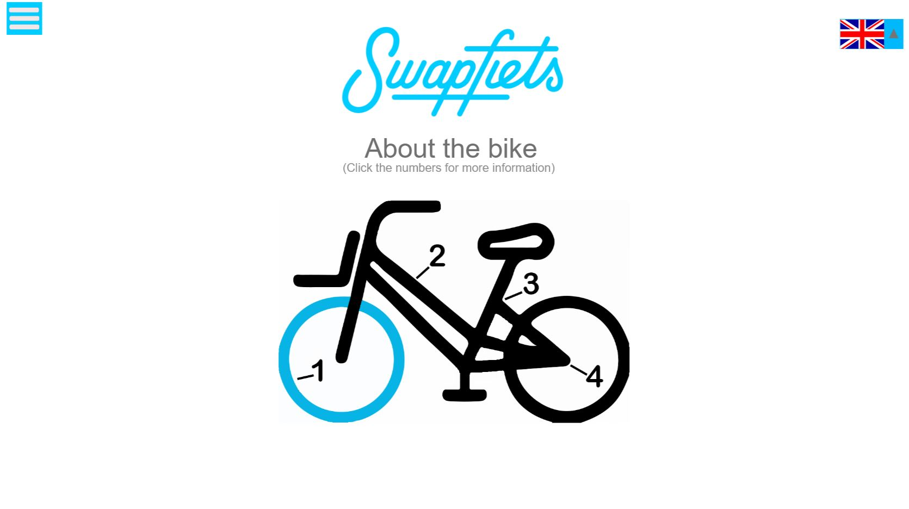

Design & Creativity
In this course we explored various techniques that can help during the creative process of thinking up of new ideas. Such ideas included brainstorming techniques. During the class we divided the creative process in three parts: The diverging par, converging part and iterating. During the diverging phase one thinks of as many ideas as possible without any contraints. The converging phase focusses on trying to filter out the best ideas from all of the ideas of the diverging phase. Iterating is less of a phase, but more of a process one should constantly do during their creative process to keep checking if they are still designing for what they set out to design. Below, a couple of illustrations that I made during this class can be found.


Visual Skills
In this course (the first part of a three part course) we had to design a possible webpage for something related to The Hague. For this I chose to design some pages for a new website of the company Swapfiets, for which I work as well. I designed a new homepage, a page wit information about the bikes they rent out and an FAQ page.
